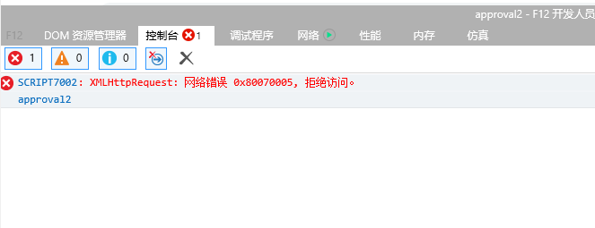

接前几天写的一篇博客 https://www.cnblogs.com/ttjm/p/11307462.html
在ie浏览器测试发现打不开，经调查问题如下
1 如果在本地开发调试,请求接口报错如下

经查是项目启动和接口地址不同源ie有所限制,只需npm run build 放到服务器上测试即可
2 ie对get请求中url长度的限制是2083字节（2k+35）（我项目的参数超过此字节）
3 ie对get请求中参数可能不能有中文,(带验证)
故代码修改如下
axios({
method: 'post',//请求方法改为post
url: 'http://localhost:19090/exportUser',//这个是请求的地址
params: {//这个是请求的参数
email: this.email,
startRegisterDate: this.registerStartTime,
endRegisterDate: this.registerEndTime
},
responseType: 'blob'
}).then((res) => {
let blob = new Blob([res.data],{type: 'application/vnd.ms-excel'});
if (window.navigator.msSaveBlob) { //IE以及IE内核的浏览器使用
try {
window.navigator.msSaveBlob(blob, '支出明细' + '.xls');
// window.navigator.msSaveOrOpenBlob(response, fileNm); //fileNm是文件的名字
} catch (e) {
console.log(e);
}
}else{
const link = document.createElement('a')
link.style.display = 'none'
link.href = URL.createObjectURL(blob);
let num = ''
for(let i=0;i < 10;i++){
num += Math.ceil(Math.random() * 10)
}
link.setAttribute('download', '支出明细' + '.xls')
document.body.appendChild(link)
link.click()
document.body.removeChild(link)
}
}).catch(error => {
console.log(error)
})如果是get请求，请求头不需要额外加参数，直接 window.location.href='http://localhost:19090/exportUser?email='+email+"&start="+start ，（参数中的参数转码或者和后台商量不用中文即可）打开一个地址即可